KINNERET AI LAB · PILOT 01
צוואר הבקבוק זז.
AI כבר לא רק עוזר לסטודנט לחשוב. הוא מתחיל להרחיב את יכולת הביצוע שלו.
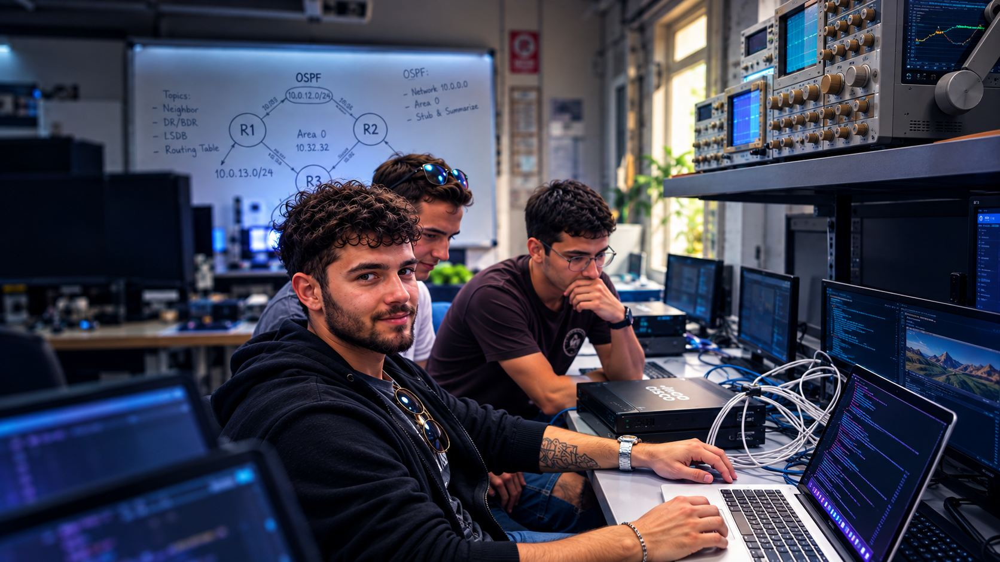
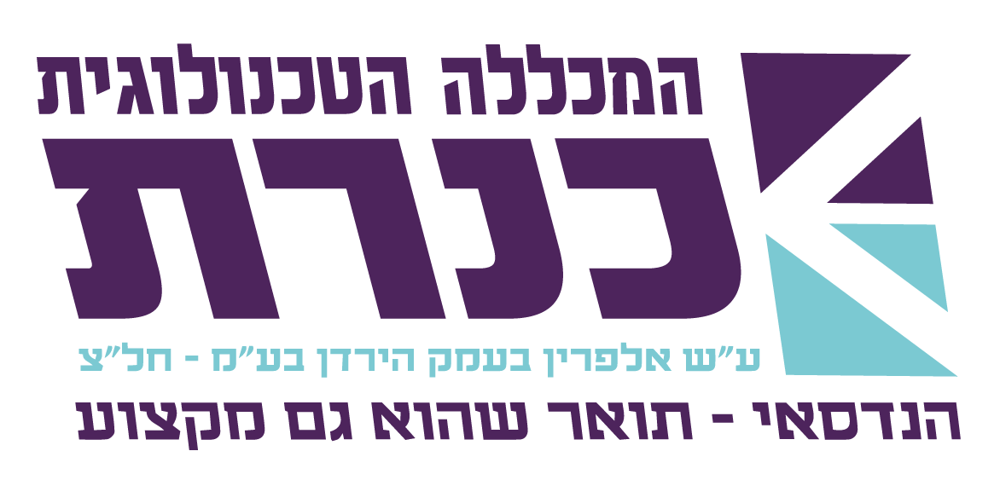
AI כבר לא רק עוזר לסטודנט לחשוב. הוא מתחיל להרחיב את יכולת הביצוע שלו.
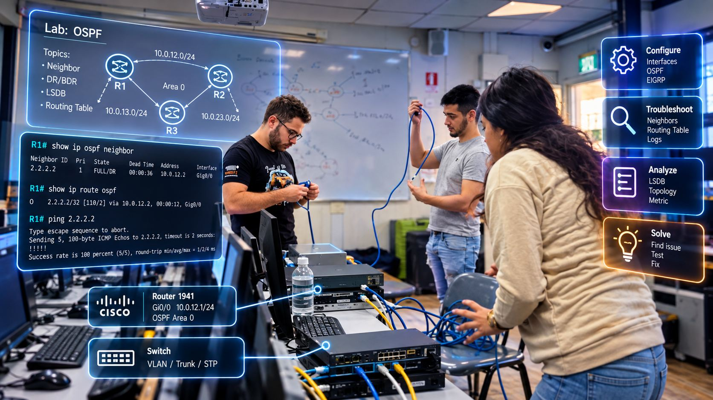
ראוטרים, אוסצילוסקופים, אלקטרוניקה ותחנות עבודה. מכללה טכנולוגית מספקת לסטודנטים ציוד מקצועי משותף.
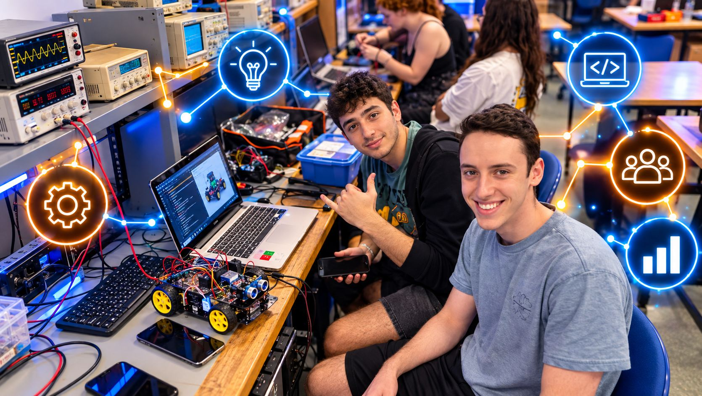
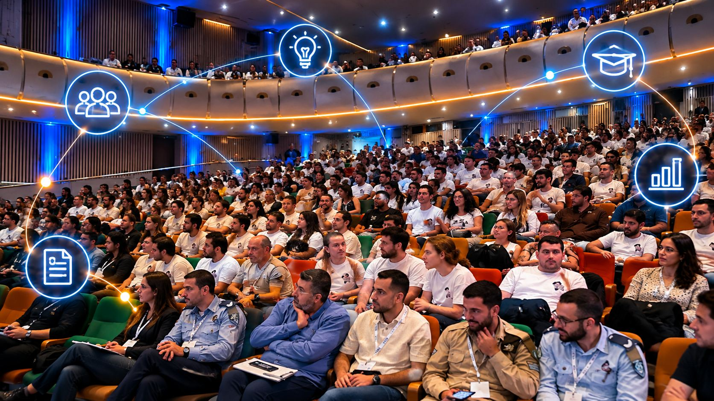
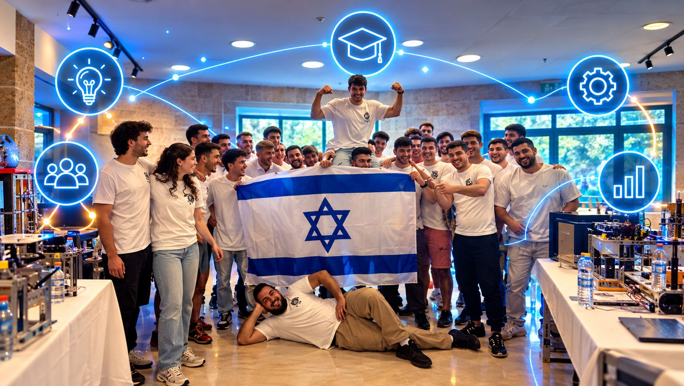
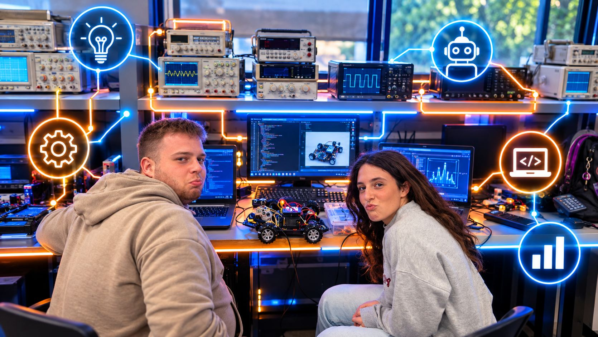
לא עוד קורס AI ליד קורס סייבר. יכולת משותפת סביב תחומים שכבר מתחילים להתכנס.
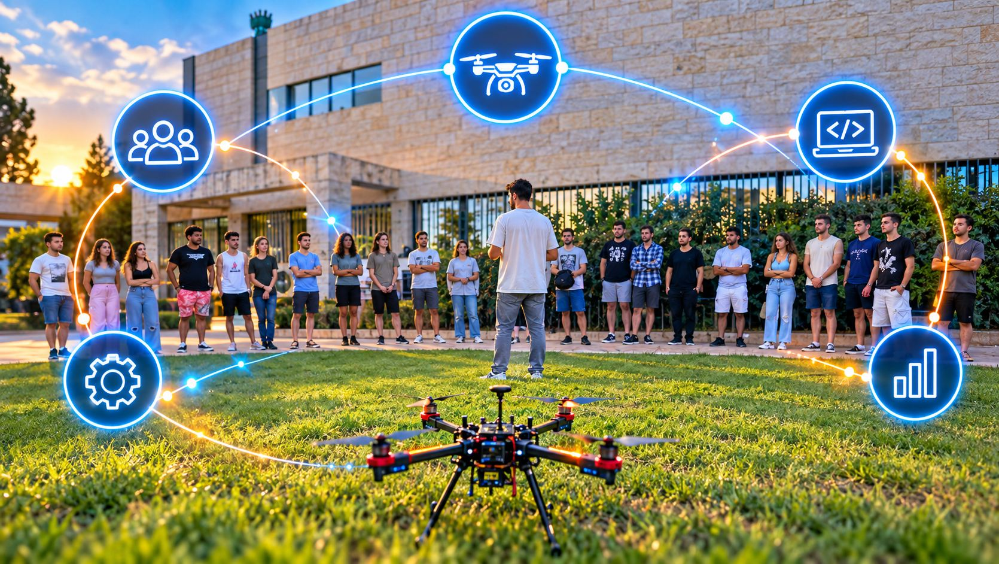
שני Use Cases ראשונים. תשתית משותפת אחת.
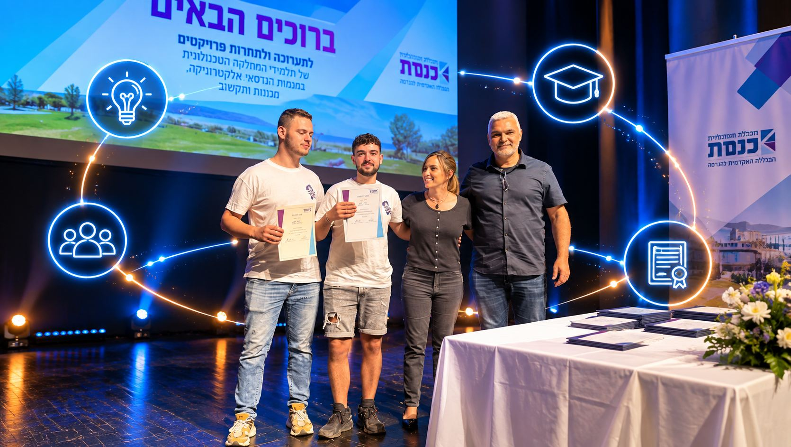
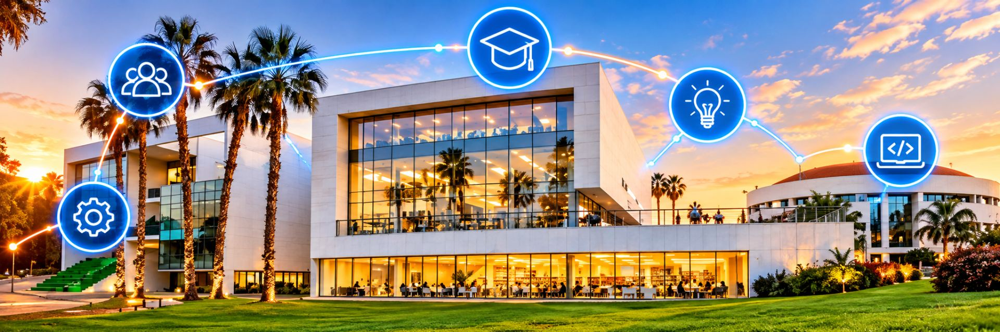
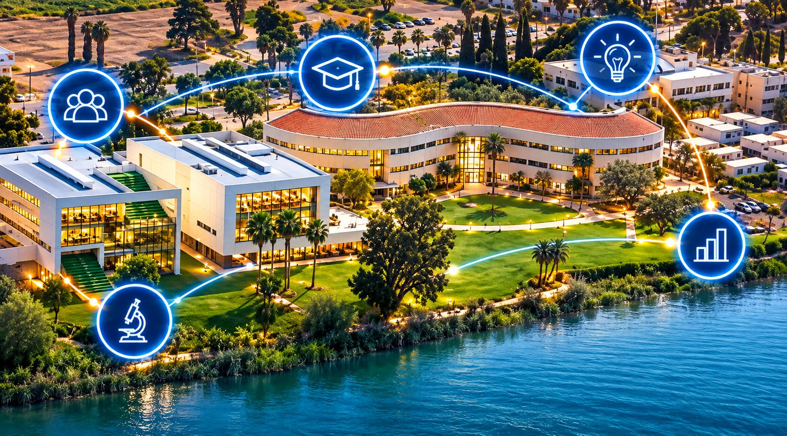
גישה למוצר AI אינה זהה לגישה למשאב מחשוב. מנוי מאפשר להשתמש בשירות שהספק הגדיר; המעבדה מאפשרת גם לבנות מערכות Agentic, לבחור מודלים, להריץ עבודות ממושכות ולנהל משאבים.
המעבדה משלימה שירותי AI קיימים, לא מחליפה אותם.
Chatbot בדרך כלל ממתין לשאלה הבאה. Agent מקבל מטרה ויכול להפעיל כלים, לכתוב ולהריץ קוד, לבדוק תוצאות ולנסות שוב, במסגרת הרשאות ומגבלות שנקבעו.
האדם עדיין קובע מטרות, גבולות ואמות מידה לאיכות.
מערכת Agentic יכולה לבצע רצף ארוך של פעולות גם ללא אדם מול המסך, ולעיתים להפעיל כמה Agents במקביל. לכן גם פעולות זולות יחסית עשויות להצטבר לעומס מחשוב משמעותי.
מכאן החשיבות של מדידת שימוש ולא רק ספירת משתמשים.
בדומה לאוסילוסקופ או למעבדת רשתות, כוח מחשוב מקצועי עשוי להפוך למשאב לימודי שהמוסד מנגיש. כך אפשר לבצע ניסויים שלא תלויים רק בציוד ובמנויים של כל תלמיד.
זו השערה מוסדית שהמעבדה הראשונית תאפשר לבחון.
התלמידים יגדירו בעיות, יבנו תהליכי Agentic, יבחרו כלים ומודלים, יריצו ניסויים, יאמתו תוצאות ויציגו את החלטותיהם. הסגל יציב רף, ילווה, ימשב ויתעד.
לא מתחייבים מראש לרשימת כלים או לפרויקט אחד אחיד.
אלה שני שימושים ראשונים אפשריים לתשתית משותפת: פרויקטים פתוחים למצטיינים בעתודה הטכנולוגית, ויישומי AI for Cyber במסלול מה״ט. אין הכרח לערבב את האוכלוסיות בכיתה אחת.
היקף ושילוב מסלול הסייבר עדיין דורשים תיאום מוסדי.
נחפש בסיס טכנולוגי, יכולת למידה עצמאית, סקרנות ויכולת להתקדם מול בעיה לא מוכרת. אפשר לשלב משימה מעשית וריאיון מובנה, ולא להסתמך רק על ממוצע ציונים.
כ־20 תלמידים הם נקודת פתיחה ולא מספר קשיח.
לא. יהיו ליווי, הסברים, סדנאות והתערבות לפי צורך. הניסוי הפדגוגי הוא להתחיל גם מהבעיה ולתת לידע הנדרש להילמד תוך כדי העבודה, במקום להניח שכל ההוראה חייבת להקדים את הפרויקט.
הסגל אחראי לאיכות, בטיחות ומשוב.
Local הוא מחשוב בבעלות המכללה; Cloud GPU הוא מחשוב שנשכר לפי זמן; API הוא גישה למודל שמופעל אצל ספק חיצוני, בדרך כלל בתשלום לפי שימוש. כל אחד מתאים לסוגי עומס אחרים.
הכוונה היא לבחון תמהיל Hybrid, לא לבחור מנצח מראש.
ענן גמיש ואינו מחייב רכישת חומרה מראש, ולכן יכול להיות עדיף לעומסים קצרים או לא צפויים. בעומס מתמשך, העלות ממשיכה להצטבר. הפיילוט ימדוד אילו עומסים מתאימים לכל אפשרות.
ייתכן שחלק משמעותי מהפעילות אכן יהיה בענן.
API נותן גישה מהירה למודלים מתקדמים ללא תחזוקת חומרה, אבל העלות מבוססת שימוש והשליטה בסביבת ההרצה מוגבלת. במערכות שמבצעות הרבה פעולות העלות עשויה להצטבר.
נשתמש ב־API כאשר הוא נותן ערך מתאים.
חומרה מקומית יוצרת קיבולת שניתן לנצל שוב ושוב, עם יותר שליטה בסביבת העבודה. היא עשויה להיות משתלמת בעומסים חוזרים וארוכים, אבל אינה כדאית אם כמעט לא משתמשים בה.
הניצולת בפועל תקבע את כדאיות ההרחבה.
נבחן עלות, זמן תגובה, זיכרון, מקביליות, יכולת המודל ורגישות מידע. למשל עומס זמני יכול לעבור לענן, ומודל מתקדם שאינו זמין מקומית יכול להיפתח דרך API.
לא נבנה מנגנון הקצאה מורכב לפני שיש לנו דפוסי שימוש.
GPU מבצע חישובים מקביליים; VRAM הוא זיכרון העבודה של המאיץ; Context הוא היקף המידע שהמודל מעבד במהלך עבודה; Tokens הן יחידות מידע שנקראות ונוצרות. כולם משפיעים על יכולת, קצב ועלות.
גודל מודל לבדו אינו מדד מספק לביצועים.
לא אם כולם מריצים בו־זמנית את העומס הכבד ביותר. בפועל חלק מהעבודה הוא תכנון, כתיבה וניתוח; משימות כבדות יכולות להיכנס לתור או לעבור לענן.
כמה מקביליות נדרשת באמת היא שאלת מדידה מרכזית.
קודם מזהים את הסיבה: תורים מעידים על מחסור בקצב או מקביליות; מודל שאינו נכנס מעיד על מחסור בזיכרון; עומס קצר עשוי להצדיק ענן; צורך במודל חזק יותר עשוי להצדיק API.
ההשקעה הבאה צריכה לפתור צוואר בקבוק שנמדד.
זו ההשקעה הראשונה בהקמת Kinneret AI Lab: יכולת מחשוב מקומית ראשונית, לצד תקציב גמיש לשירותי Cloud ו־AI משלימים ולמדידה. המפרט וחלוקת התקציב ייסגרו לפני רכישה לפי הצעות מחיר.
המעבדה היא מהלך רב־שנתי שידרוש השקעות נוספות לפי תוצאות.
תקציב קטן יותר יוביל ככל הנראה להישענות רבה יותר על שירותים חיצוניים. תקציב גדול יותר עשוי לאפשר יותר זיכרון, מקביליות, משתמשים או שירותים. אין סיבה להניח מראש שכל תוספת צריכה להפוך ל־GPU גדול יותר.
מגדירים חלופות לפי התוצאות הרצויות והעומסים.
מודלים, Agents, Tokens, זמן GPU ו־CPU, זיכרון, זמני ריצה, תורים, שימוש בענן וב־API, עלויות, ניסויים ותוצאות. נתעד גם שינויים בארכיטקטורה ומי יזם אותם.
המטרה היא להבין גם איך הביקוש למחשוב נוצר.
נבחן את התוצרים ואת איכות העבודה, לצד שימוש במשאבים, עלויות, צווארי בקבוק, עצמאות התלמידים, צרכי ההנחיה והיכולת להפעיל את התשתית. גם גילוי שהארכיטקטורה הראשונה אינה נכונה הוא ממצא שימושי.
בסוף השנה נרצה החלטה מבוססת על השלב הבא.
נגדיר בידוד, הרשאות, ניהול סודות, ניטור, מגבלות משאבים וכללים להעברת מידע לשירותים חיצוניים. Local אינו מאובטח רק משום שהוא מקומי.
לא נשתמש במידע אישי או רגיש אמיתי לפני שנקבע מדיניות מתאימה.
כי איננו יודעים עדיין מהם דפוסי השימוש. מערכת אוטומטית מורכבת עלולה לקבע הנחות שלא נבדקו. עדיף להתחיל בגבולות אבטחה, מדידה וניהול פשוט, ולפתח אופטימיזציה כשיצטברו נתונים.
ניהול משאבים עשוי להפוך גם לפרויקט של תלמידים.
תשתית ראשונה עובדת, תלמידים ופרויקטים, ידע מקצועי ופדגוגי אצל הסגל, ונתוני שימוש שמאפשרים לתכנן את ההרחבה. אלה נכסים שמצטברים גם אם רכיבי החומרה משתנים בעתיד.
הערך אינו מסתכם ברכישת מחשב.
את החומרה של 2029 אפשר לקנות ב־2029, אבל לא שלוש שנות ניסיון שניתן לצבור עד אז. אם הפיילוט יגלה שהעדפנו את התמהיל הלא נכון או שהוראה אחרת נחוצה, הוא עדיין סיפק מידע לקבלת החלטה טובה יותר.
ההצעה היא להתחיל קטן, ללמוד ולהרחיב רק כשיש הצדקה.